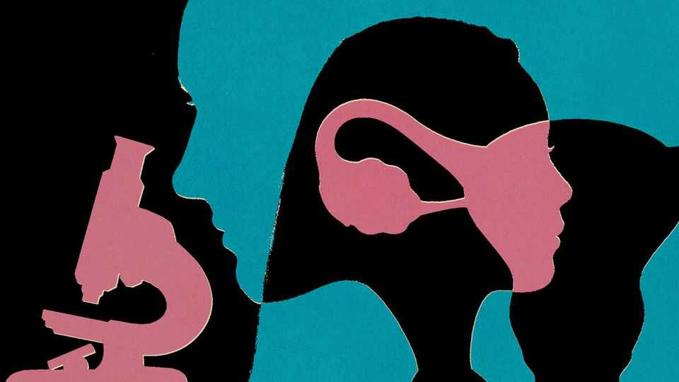

Scientists are at last starting to understand endometriosis
That should lead to quicker diagnosis and better treatment

Nov 12th 2026
The endometrium is a layer of tissue in the uterus which typically thickens during the menstrual cycle. If a fertilised egg doesn’t implant, this lining typically thins and sheds. But in women with endometriosis, tissue similar to the endometrium starts growing outside the uterus. The condition can warp and bind together pelvic organs, including the ureter, bladder and bowel, and even spread into the abdominal wall. Over time it leads to nausea, vomiting and intolerable pain. It is estimated that 190m women have the disease.
Modern medicine cannot cure endometriosis, and treatments are inadequate. Its causes are still largely unknown. Obtaining a diagnosis can take almost nine years, requiring such invasive surgical procedures as laparoscopies (in which small cameras are inserted through a slit in the abdomen) and biopsies (in which tissue samples are removed for testing). Even then, results do not always correlate with the symptoms, making it hard to assess the severity of the condition.
Fortunately, there have been a number of promising scientific developments in recent years. “There’s been a surge in awareness of the condition,” says Krina Zondervan of Oxford University. More patient data have helped, too. Australia, Denmark, France and Spain have launched action plans to improve clinical care or boosted funding for the condition. After decades in the dark, researchers are rapidly moving towards a clearer understanding of the forms endometriosis takes, less invasive ways of diagnosing the condition and a variety of possible treatments.
Dr Zondervan’s work helped trigger this transformation. In 2023 she and her colleagues published the results of what was then the largest-ever study of endometriosis. It compared the genetic data of 60,000 women who had the condition with those of more than 700,000 without it. Among the genetic markers common in patients were a number linked to other painful and inflammatory conditions. This suggests potential avenues for treatment.
The following year Dr Zondervan and her team published a detailed map of the types of cells in the uterine lining, including those embedded deep in tissue layers. This allowed them to describe how cells communicate throughout the menstrual cycle, and to pinpoint the cell types most likely to be affected by the genetic markers associated with endometriosis.
More progress was made in April when a team led by Dora Koller, a researcher at the Sant Pau Research Institute in Spain, published the results of an even larger genetic study. It covered 1.4m women, including more than 105,000 with endometriosis. Their results linked specific genes to immune-system responses and hormonal processes characteristic of endometriosis, as well as identifying a genetic connection with chronic fatigue, a symptom that doctors frequently dismiss. Such work will help scientists identify genetic risk factors for endometriosis.
Dr Koller, who has endometriosis herself, says her team’s results support the idea that the disease affects the whole body, rather than being confined to a woman’s pelvis. She says their study could guide new drug development and give researchers clues about whether existing treatments that work for other painful diseases could be used for endometriosis, too.
Research efforts on quicker and less invasive means of diagnosing the disease have also ramped up. Katherine Burns of the University of Cincinnati, who has also experienced endometriosis, has spent time studying white blood cells in the menstrual fluid of women with the disease. She has found they are distinctive in two ways: the cell nuclei are smaller, and they have more lobes than their healthy equivalents. Dr Burns is now using that information to develop ways to diagnose endometriosis without the need for surgery.
Another diagnostic approach is to rely on molecular biomarkers such as proteins and microRNAs (short molecules that regulate gene expression) that feature in the body’s inflammatory and immune response to endometriosis. In March scientists from various organisations, including HerAnova Lifesciences, a Boston-based firm, reported that detecting several of these biomarkers could be used to diagnose endometriosis. In 61.5% of these cases, vaginal ultrasounds and imaging had missed signs of the disease.
An even less invasive way to diagnose and monitor endometriosis was described in the Lancet Obstetrics and Gynaecology in April. Researchers at Oxford found a new imaging agent (a dye or contrast that is injected into the body to see microscopic biological processes) that was well tolerated by patients with superficial peritoneal endometriosis, the most prevalent early-stage form of the disease. 99mTc-maraciclatide, as the agent is known, attaches to cell receptors that signal inflammatory conditions, causing it to accumulate in areas where there is inflammation. The hot spots can then be seen with imaging tools. Maraciclatide, which is being developed by Serac Healthcare, a pharmaceutical company based in London, hopes to go through phase-3 trials (when compounds are tested at scale in humans) and validation in the near future.
More avenues for treating endometriosis are also opening up. In March, Gesynta Pharma, a Swedish pharma company, announced that it had begun its phase-2 clinical trial of Vipoglanstat. Instead of interacting with hormones, as existing treatments do, the drug blocks an enzyme that is needed to make a pain-related chemical in the body. In doing so it reduces pain and inflammation, making life more bearable. A non-hormonal treatment developed by EndoCyclic Therapeutics, a biopharmaceuticals firm, was cleared by America’s drug regulator for phase-1 human trials in March. Called ENDO-205, it aims to go one better: clearing lesions and reducing the rate at which they recur.
More funding may well lead to more progress. Much of the work so far has been done “on a shoestring”, says Dr Zondervan. America’s National Institutes of Health allocates less than 0.1% of its budget to endometriosis—far less than that for much rarer conditions (Crohn’s disease, for example, receives about 15 times more money per patient). A programme launched in 2024 under President Joe Biden to fund women’s health research, including endometriosis, was cut this year.
With more cash researchers could conduct trials on women from across the world, to understand how varied the effects of endometriosis are. They could also generate richer data to help distinguish between the disease’s many forms and investigate the different types of lesions involved. Such advances could, then, drive the development of targeted therapies that might bring relief to millions. ■